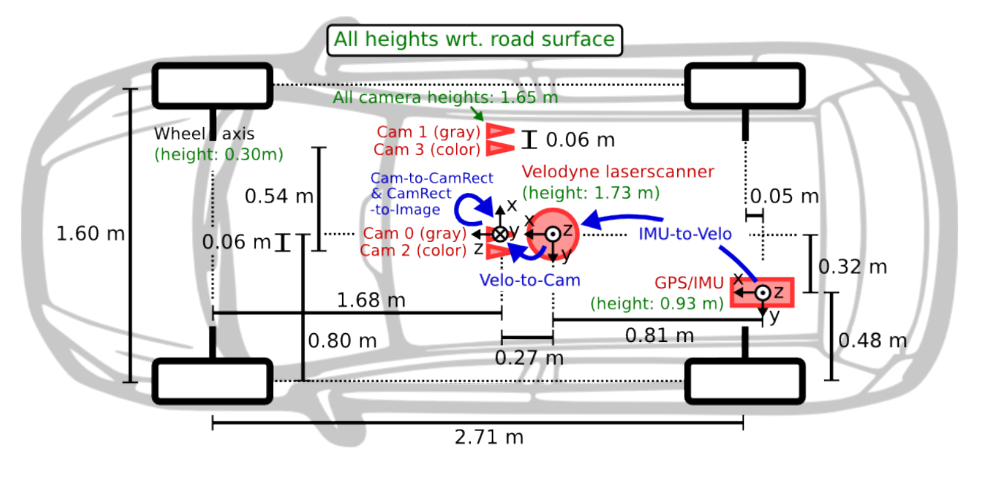
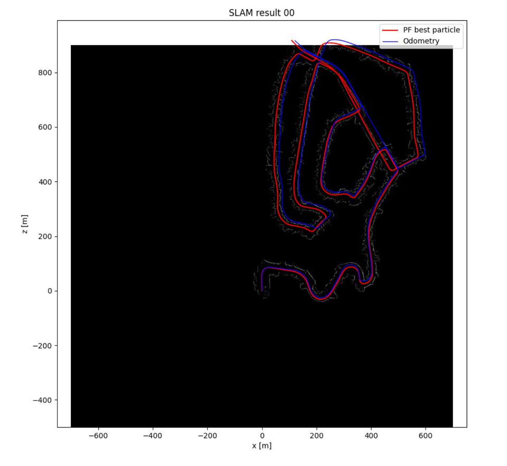
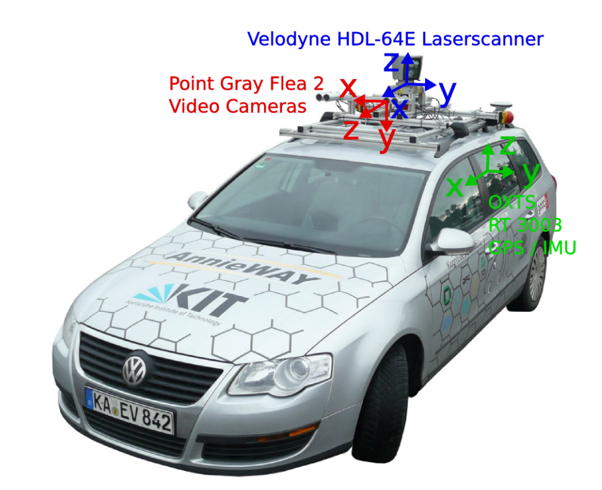

← Back to Projects
LiDAR-Based SLAM for Autonomous Navigation
2026 · University of Pennsylvania · Robotics Coursework
Python
SLAM
Particle Filter
LiDAR
Occupancy Grid
Sensor Fusion
Gallery



Overview
- LiDAR-Based SLAM Pipeline: Developed a full SLAM system using LiDAR data, integrating motion prediction, observation likelihood estimation, and particle filter-based localization.
- Probabilistic Occupancy Mapping: Built an occupancy grid map using log-odds representation, enabling efficient Bayesian updates from sequential LiDAR observations.
- Particle Filter Localization: Implemented motion propagation with Gaussian noise and observation-based weight updates, maintaining a distribution over possible robot poses.
- Robust State Estimation: Applied stratified resampling based on effective particle size to mitigate particle degeneracy and improve localization stability.
Highlights
- Implemented full SLAM pipeline from motion prediction to mapping
- Designed probabilistic mapping using log-odds
- Developed LiDAR-based observation likelihood model
- Implemented stratified resampling for particle filter stability
- Achieved consistent localization and mapping under uncertainty